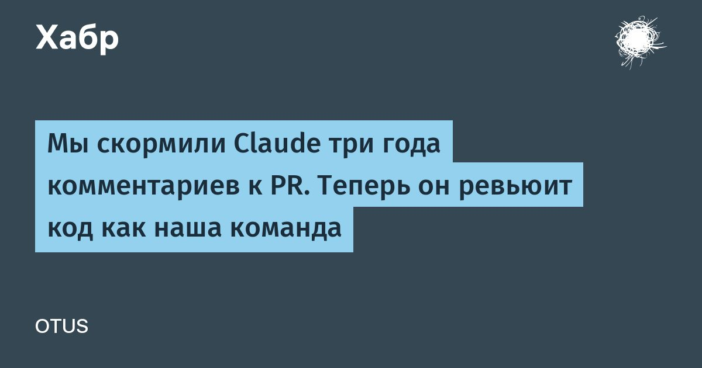

Перевод Мы скормили Claude три года комментариев к PR. Теперь он ревьюит код как наша команда
Искусственный интеллект помог нашей команде писать код быстрее, но ревью по-прежнему тормозило разработку.
Тогда мы взяли три года комментариев к PR и собрали на их основе ИИ-ревьюера, который знает, к чему обычно придирается каждый из коллег.
Рассказываем, как устроен этот инструмент, почему первая мультиагентная версия оказалась слишком дорогой и как удалось снизить стоимость проверки почти в семь раз.
Читать далее